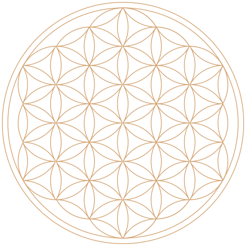

J’ai grandi à Lucerne et très vite je me suis intéressée aux professions médicales et paramédicales. Après une première formation en Shiatsu, suivie par l’apprentissage d’autres méthodes naturelles de soin, j’ai réalisé mon diplôme en hydrothérapie du côlon. Cette méthode permet de purifier la personne jusqu’à toucher son âme.
Carolina Erni

“Ton corps est ton temple, conserve le propre et pur,
afin que l’ame puisse y
vivre.”
– B.K.S. Iyengar